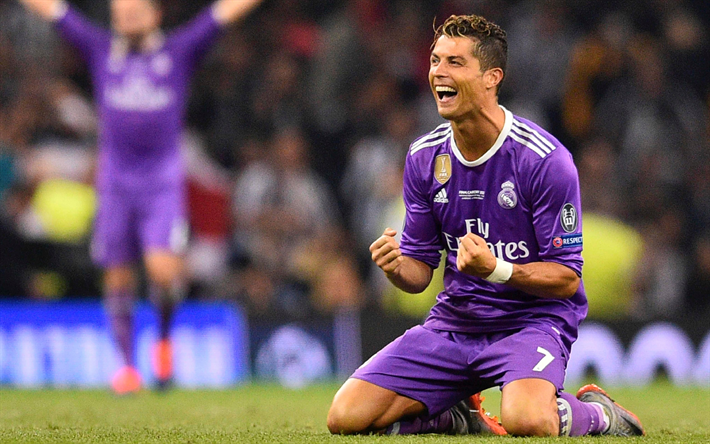
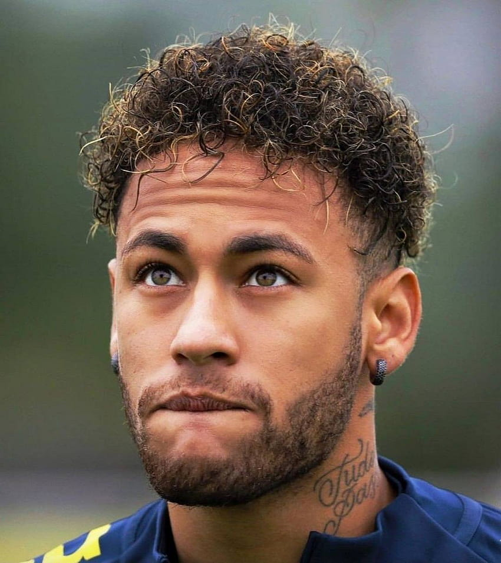
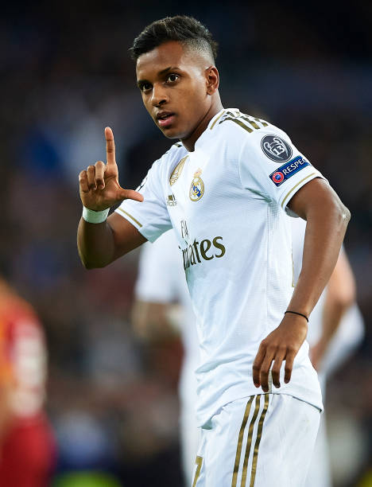
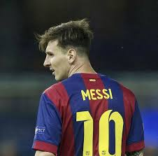
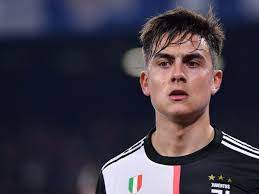

Home
Welcome to Elite Football Stars! This website provides information about some of the world's top football players.
Click on the links above to learn more about each player.
Cristiano Ronaldo
My Favorite Football Player
This is a picture of Cristiano Ronaldo.
Cristiano Ronaldo is a Portuguese professional footballer widely regarded as one of the greatest players of all time. He has played for top clubs such as Sporting Lisbon, Manchester United, Real Madrid, Juventus, Manchester United again and i snow in Saudis Al Nassar. Ronaldo is known for his incredible goal-scoring ability, athleticism, and versatility. He has won numerous awards throughout his career, including multiple FIFA Ballon d'Or awards.Neymar Jr.
This is a picture of Neymar jr.
Neymar Jr. is a Brazilian forward known for his exceptional dribbling skills, creativity, and flair on the football field. He began his professional career at Santos before moving to Barcelona in 2013,then to Paris Saint-Germain in a record-breaking transfer and now at Saudis Al Hilal. Neymar has won multiple domestic and international titles and is considered one of the most talented players in the world.Rodrygo
This is a picture of Rodrygo.
Rodrygo Silva de Goes, commonly known as Rodrygo, is a Brazilian winger who currently plays for Real Madrid. He joined Real Madrid in 2019 from Santos and has since established himself as a promising young talent. Rodrygo is known for his pace, dribbling ability, and goal-scoring prowess. He has already made significant contributions to Real Madrid's success.Lionel Messi
This is a picture of Lionel Messi.
Lionel Messi is an Argentine forward widely regarded as one of the greatest footballers of all time. He spent the majority of his career at Barcelona, where he won numerous domestic and international titles, including multiple UEFA Champions League titles [UCL]. In 2021, Messi joined Paris Saint-Germain after leaving Barcelona. Messi is known for his extraordinary dribbling skills, vision, and goal-scoring ability.Dybala
This is a picture of Dybala.
Paulo Dybala is an Argentine forward who currently plays for Juventus in Serie A. Known for his versatility, skill, and ability to score from various positions, Dybala has been a key player for Juventus since joining the club in 2015. He has won multiple Serie A titles and has earned praise for his technical ability and creativity on the pitch. The Argentine is now playing for Italian side Roma under coach Jose Morinho.